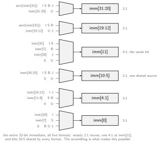

RISC-V (Berkeley, 2010) is an open, royalty-free ISA designed from the lessons in History of Computing: a minimal base integer ISA that a student can implement in a term, plus optional standard extensions, with the encoding frozen forever. It is the ISA these notes use everywhere; this note is the reference.
Design decisions and their reasons:
| Decision | Why |
|---|---|
| load-store, 32 registers | simple pipelines, compiler-friendly (Simple Instruction Pipeline) |
| no condition codes | no implicit dependencies to rename or track between instructions |
| compare-and-branch in one instruction | no flags to save on context switch, fewer instructions |
| no delay slots | nothing microarchitectural leaks into the ISA |
| fixed 32-bit instructions (16-bit with C) | trivial fetch/decode; variable length only as compression |
| modular extensions | one ISA from microcontroller to server, no forced baggage |
32 integer registers (x0-x31), 64-bit in RV64, plus
pc. x0 is hardwired zero: reading gives 0,
writes vanish. That one trick synthesizes many instructions
(mv, nop, neg, compares against
zero) from existing ones.
| Reg | ABI name | Role | Saved by |
|---|---|---|---|
| x0 | zero | constant 0 | - |
| x1 | ra | return address | caller |
| x2 | sp | stack pointer | callee |
| x3, x4 | gp, tp | global / thread pointer | - |
| x5-x7, x28-x31 | t0-t6 | temporaries | caller |
| x8, x9 | s0/fp, s1 | saved / frame pointer | callee |
| x10-x17 | a0-a7 | arguments, a0-a1 returns | caller |
| x18-x27 | s2-s11 | saved | callee |
Six formats, all 32 bits, and the register fields never move:
rs1, rs2, rd are always in the
same bit positions, so the register file can be read before the
instruction type is even known, and the sign bit of every immediate is
always bit 31 (one sign-extension circuit, no critical-path decode):
| Format | Used by | Immediate |
|---|---|---|
| R | register-register ALU | none |
| I | ALU immediates, loads, jalr |
12-bit signed |
| S | stores | 12-bit signed, split around rs2/rs1 |
| B | branches | 13-bit signed, ×2, scrambled |
| U | lui, auipc |
upper 20 bits |
| J | jal |
21-bit signed, ×2, scrambled |
The B/J immediates look scrambled precisely to keep every other bit in its I/S position. Reconstructing the B-type immediate: = bits followed by a hardwired 0 (branch targets are even), then sign-extend from bit 12.
The hardware payoff, bit by bit: because each immediate bit has at most a few fixed source positions across all five immediate formats, the entire 32-bit immediate assembles through mostly 2:1 muxes, one shared-source range that needs no mux at all, and a single 4:1 at the worst bit. A format-agnostic encoding would need a shifter here; RISC-V needs wires:

ALU: add/sub/and/or/xor, shifts
sll/srl/sra, compares slt/sltu (set rd to
0/1); immediate forms addi/andi/.... RV64 adds
addw/subw/... operating on the low 32 bits with
sign-extension, keeping 32-bit C code fast.
Loads/stores: one addressing mode, base + 12-bit
signed offset. lw x5, 8(x2); sized variants
lb/lh/lw/ld (sign-extending) and lbu/lhu/lwu
(zero-extending), sb/sh/sw/sd.
Branches:
beq/bne/blt/bge/bltu/bgeu rs1, rs2, offset, comparing two
registers directly. PC-relative ±4 KiB.
Jumps: jal rd, offset (call: rd gets
PC+4, typically ra), jalr rd, offset(rs1)
(indirect: returns, function pointers, long calls).
Constants and addressing idioms: lui
loads a 20-bit upper immediate; auipc adds one to the PC.
Any 32-bit constant = lui + addi; any
PC-relative address = auipc + 12-bit offset, which makes
all code position-independent by construction.
Pseudo-instructions the assembler expands:
| Written | Actual |
|---|---|
li x5, 42 |
addi x5, x0, 42 (or
lui+addi) |
mv x5, x6 |
addi x5, x6, 0 |
not x5, x6 |
xori x5, x6, -1 |
j label |
jal x0, label |
call f |
auipc ra + jalr ra |
ret |
jalr x0, 0(ra) |
nop |
addi x0, x0, 0 |
Arguments in a0-a7, results in a0-a1,
return address in ra. Caller-saved (t, a
registers): the callee may clobber them, so the caller preserves what it
needs. Callee-saved (s registers, sp): the callee must
restore them before returning.
# int sumsq(int a, int b) { return helper(a*a) + b; }
sumsq:
addi sp, sp, -16 # prologue: grow stack (16 B aligned)
sd ra, 8(sp) # save return address (we make a call)
sd s0, 0(sp) # save a callee-saved reg
mv s0, a1 # b survives the call in s0
mul a0, a0, a0 # a*a into argument register
call helper # clobbers t*, a*, ra
add a0, a0, s0 # result += b
ld s0, 0(sp) # epilogue: restore
ld ra, 8(sp)
addi sp, sp, 16
retThe base is RV32I or RV64I (~47 instructions). Everything else is opt-in:
| Ext | Adds | Notes |
|---|---|---|
| M | mul/mulh/div/rem |
multiply/divide |
| A | lr/sc, amoadd/amoswap/... |
atomics for the Memory Model |
| F, D | single/double FP, f0-f31 |
Floating Point Architecture |
| C | 16-bit compressed forms | ~25-30% code size cut; frequent ops, popular regs |
| V | vector registers, vsetvli, vector ops |
true vector model (Flynn’s Taxonomy) |
| Zicsr | csrrw/csrrs/csrrc |
CSR access, prerequisite for Exceptions handling |
| B (Zba/Zbb/Zbs) | bit-manipulation | address gen, popcount, rotates |
G = IMAFD + Zicsr + Zifencei; a Linux-class core is typically RV64GC. Profiles (RVA23 etc.) bundle extensions so software has a stable target.
CV32E40P’s Xpulp extensions show extensibility in action:
zero-overhead hardware loops via CSRs, post-increment addressing
(cv.lb rD,(rs1),Imm), compare-with-immediate branches, and
SIMD on packed bytes, each worth real cycles in DSP loops. The cost is
equally visible: every one needs its own -march=...xcv*
toolchain flag, and code using them runs nowhere else.
Privilege in brief: three modes, M (machine,
mandatory, firmware), S (supervisor, OS with virtual memory from
Caches
and Virtual Memory), U (user). ~4096 CSR addresses carry per-mode
state (mstatus, mtvec, satp, …);
trap mechanics are in
Exceptions.
| RISC-V | ARMv8 (AArch64) | x86-64 | |
|---|---|---|---|
| encoding | 32-bit (+16 C) | 32-bit fixed | 1-15 B variable |
| integer regs | 32 | 31 + SP | 16 |
| flags | none | NZCV | EFLAGS |
| addressing modes | base+offset | base+offset, indexed, pre/post | base+index×scale+disp |
| memory model | RVWMO (weak) | weak | TSO (strong) |
| lineage | clean-slate 2010 | evolved 1985- | evolved 1978- |
x86-64’s variable length buys code density at the cost of the decode hardware in Advanced Superscalar Architectures; RISC-V bets that decode simplicity plus the C extension gets both.
Author: Sai Govardhan (saigov14@gmail.com)
Textbooks
Standards, Papers, and Wikipedia
MIT License
Copyright (c) 2025 Sai Govardhan (saigov14@gmail.com)
Permission is hereby granted, free of charge, to any person obtaining a copy
of this software and associated documentation files (the "Software"), to deal
in the Software without restriction, including without limitation the rights
to use, copy, modify, merge, publish, distribute, sublicense, and/or sell
copies of the Software, and to permit persons to whom the Software is
furnished to do so, subject to the following conditions:
The above copyright notice and this permission notice shall be included in all
copies or substantial portions of the Software.
THE SOFTWARE IS PROVIDED "AS IS", WITHOUT WARRANTY OF ANY KIND, EXPRESS OR
IMPLIED, INCLUDING BUT NOT LIMITED TO THE WARRANTIES OF MERCHANTABILITY,
FITNESS FOR A PARTICULAR PURPOSE AND NONINFRINGEMENT. IN NO EVENT SHALL THE
AUTHORS OR COPYRIGHT HOLDERS BE LIABLE FOR ANY CLAIM, DAMAGES OR OTHER
LIABILITY, WHETHER IN AN ACTION OF CONTRACT, TORT OR OTHERWISE, ARISING FROM,
OUT OF OR IN CONNECTION WITH THE SOFTWARE OR THE USE OR OTHER DEALINGS IN THE
SOFTWARE.